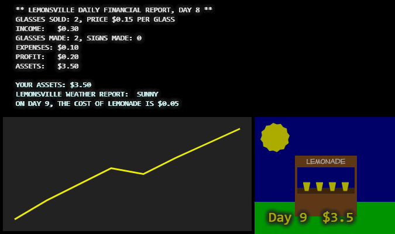

Первоначальная версия игры Lemonade Stand была создана Bob Jamison в 1973 году для мэйнфреймов, затем в 1979 году Charlie Kellner портировал её на домашний компьютер Apple II. Предлагаемая вам версия игры основана на исходном коде игры 1979 года, написанном на Applesoft BASIC.
В чем суть игры?
IN THIS SMALL TOWN, YOU ARE IN CHARGE OF RUNNING YOUR OWN LEMONADE STAND.
HOW MUCH PROFIT YOU MAKE IS UP TO YOU.
IF YOU MAKE THE MOST MONEY, YOU'RE THE WINNER!!
TO MANAGE YOUR LEMONADE STAND, YOU WILL NEED TO MAKE THESE DECISIONS EVERY DAY:
1. HOW MANY GLASSES OF LEMONADE TO MAKE (ONLY ONE BATCH IS MADE EACH MORNING)
2. HOW MANY ADVERTISING SIGNS TO MAKE (THE SIGNS COST FIFTEEN CENTS EACH)
3. WHAT PRICE TO CHARGE FOR EACH GLASS
YOU WILL BEGIN WITH $2.00 CASH (ASSETS).
BECAUSE YOUR MOTHER GAVE YOU SOME SUGAR,
YOUR COST TO MAKE LEMONADE IS $0.02 (TWO CENTS A GLASS, THIS MAY CHANGE IN THE FUTURE).
YOUR EXPENSES ARE THE SUM OF THE COST OF THE LEMONADE AND THE COST OF THE SIGNS.
YOUR PROFITS ARE THE DIFFERENCE BETWEEN THE INCOME FROM SALES AND YOUR EXPENSES.
THE NUMBER OF GLASSES YOU SELL EACH DAY DEPENDS ON THE PRICE YOU CHARGE, AND ON
THE NUMBER OF ADVERTISING SIGNS YOU USE.
KEEP TRACK OF YOUR ASSETS, BECAUSE YOU CAN'T SPEND MORE MONEY THAN YOU HAVE!
В этой игре вы принимаете на себя роль школьника, который подрабатывает на каникулах, продавая на улице лимонад. С утра вы готовите лимонад и рекламные плакаты и в течение всего дня продаёте приготовленный объём напитка. У вас есть начальный капитал в размере $2.00 (величина A0). Стоимость стакана лимонада для вас составляет всего $0.02 (C), но со временем эта величина может измениться. На каждом ходу вам нужно решить, как потратить имеющиеся деньги, и вы выражаете своё решение, сообщая компьютеру три числа:
- L = Сколько стаканов лимонада вы приготовите этим утром (
glasses made, целое число от 0 до 1000) - S = Сколько рекламных плакатов вы установите в округе, каждый плакат стоит для вас $0.15 (
signs made, целое число от 0 до 50) - P = Цена, которую вы просите за каждый стакан (
price, цена в центах, целое число от 0 до 100)
- E = S × 0.15 + L × C = расходы на изготовление рекламных плакатов и приготовление лимонада (
expenses); - N = сколько стаканов было продано (
glasses sold); - M = N × P = доход (
income); - M − E = полученная прибыль (
profit); - An+1 = An + (M − E) = ваш капитал после сегодняшнего дня (
assets).
Ваш игровой бот
Как и в других играх на платформе CodenJoy, здесь вы играете не сами, за вас играет ваш игровой бот – написанная вами программа. Ваш бот обменивается сообщениями с сервером. За каждый ход ваш бот получает описание текущей ситуации от сервера и должен передать ему команду. В данной игре описание игровой ситуации включает две части:
-
(В первый день) Приветственное сообщение с описанием игры
(см. выше текст "HI! WELCOME TO LEMONSVILLE, CALIFORNIA!").
(В любой другой день) Финансовый отчёт за предыдущий день. - Прогноз на утро нового дня.
Пример того, как может выглядеть сообщение о результатах первого дня плюс прогноз на второй день:
GLASSES SOLD: 10, PRICE $0.20 PER GLASS
INCOME: $2.00
GLASSES MADE: 10, SIGNS MADE: 2
EXPENSES: $0.50
PROFIT: $1.50
ASSETS: $3.50
YOUR ASSETS: $3.50
LEMONSVILLE WEATHER REPORT: CLOUDY
ON DAY 2, THE COST OF LEMONADE IS $0.02
Эту информацию бот получает в виде JSON, который имеет вид (строка messages здесь разделена на отдельные строки для удобства просмотра, значения не обязательно передаются в этом порядке):
{
"lemonadeCost": 0.02,
"assets": 3.5,
"weatherForecast": "CLOUDY",
"isBankrupt": false,
"isGameOver": false,
"messages": "** LEMONSVILLE DAILY FINANCIAL REPORT, DAY 1 **\n
GLASSES SOLD: 10, PRICE $0.20 PER GLASS\nINCOME: $2.00\n
GLASSES MADE: 10, SIGNS MADE: 2\nEXPENSES: $0.50\n
PROFIT: $1.50\nASSETS: $3.50\n\n
YOUR ASSETS: $3.50\n
LEMONSVILLE WEATHER REPORT: CLOUDY\n
ON DAY 2, THE COST OF LEMONADE IS $0.02\n",
"history": [
{
"income": 2,
"signsMade": 2,
"lemonadeSold": 10,
"lemonadeMade": 10,
"assetsAfter": 3.5,
"day": 1,
"profit": 1.5,
"lemonadePrice": 0.2,
"assetsBefore": 2,
"expenses": 0.5
},
],
"day": 2
}
day – номер текущего дня;
assets – сколько у вас сейчас есть денег;
isBankrupt – признак того, что вы банкрот, то есть имеющихся денег не хватает на приготовление одного стакана лимонада;
isGameOver – признак того, что игра окончена, то есть либо вы банкрот, либо вы дошли до конца игры и победили;
messages – все сообщения от сервера, для первого дня здесь будет приветственное сообщение и прогноз на текущий день;
для второго и последующих дней здесь будет финансовый отчёт за день (day − 1) и прогноз на текущий день;
обращайте внимание на это поле, там могут быть неожиданности;
lemonadeCost – стоимость стакана лимонада для вас на сегодняшний день;
weatherForecast – прогноз погоды на сегодняшний день;
history – история за последние 10 дней.
Получив информацию от сервера, ваш бот должен отправить команду вида:
message('go 2,1,15')
где три числа это: сколько стаканов лимонада приготовить, сколько сделать рекламных плакатов, сколько будет стоить стакан лимонада.
В случае, когда вы достигли конца игры, ваш бот должен отправить команду вида:
message('go reset'),
чтобы начать игру заново.
Игровой экран на странице игры выглядит примерно так:

Здесь слева вверху выведены сообщения от сервера (messages),
справа внизу рисунок показывает прогноз погоды на сегодня, номер дня (day) и текущую сумму денег (assets),
слева внизу находится график истории изменения суммы денег (assets) за последние 10 дней.
Организаторы предоставляют игрокам подготовленные клиенты в исходном коде на нескольких языках:
Java, C#, JavaScript, Python.
Каждый из этих клиентов уже умеет связываться с сервером,
принимать и разбирать сообщение от сервера (обычно это называется board)
и отправлять серверу команды.
Подключение к серверу
Игрок
регистрируется на сервере, указывая свой email.
Далее необходимо скачать, настроить и запустить клиента, который подключается к серверу через веб-сокеты:
Если в этом списке нет нужного языка, придётся написать свой клиент.
После регистрации на сервере в адресной строке браузера вы увидите URL вида:
http://epruryaw0576.moscow.epam.com:43022/codenjoy-contest/board/player/np0mlqtjasknp3554pi4?code=12345678901234567890
В коде вашего клиента вам нужно найти похожую строчку и заменить её на URL из вашего браузера – тем самым, вы задаёте логин/пароль для доступа к серверу. Затем запустите ваш клиент и убедитесь, что сервер получает команды вашего клиента. После этого можно приступать к работе над логикой вашего бота.
Удачной игры!